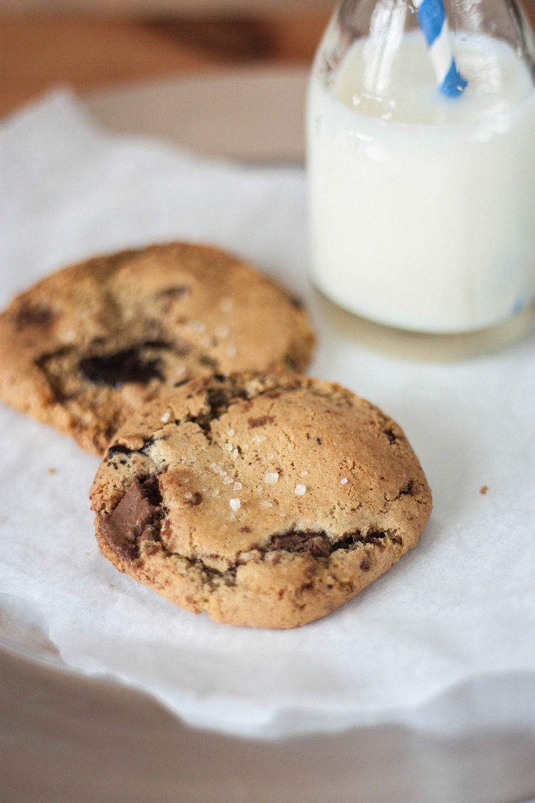
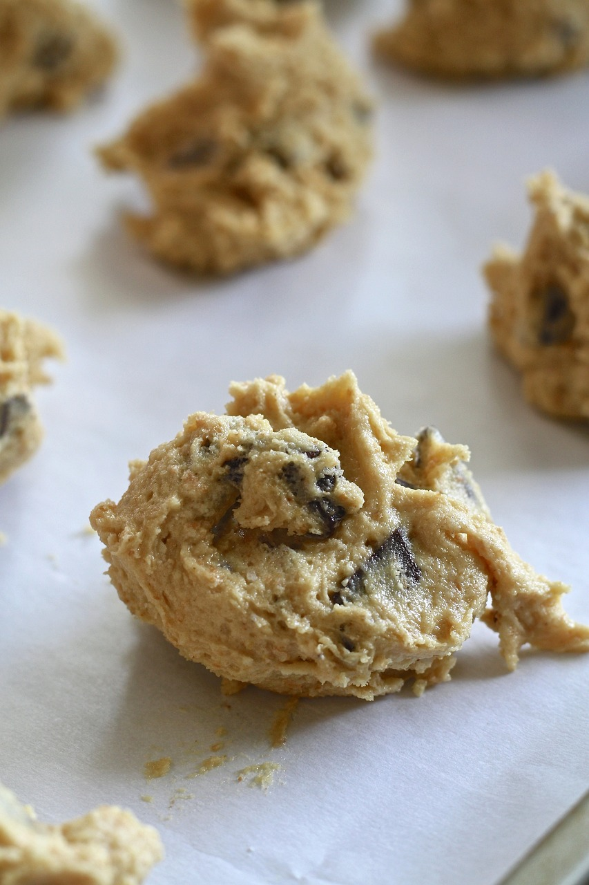
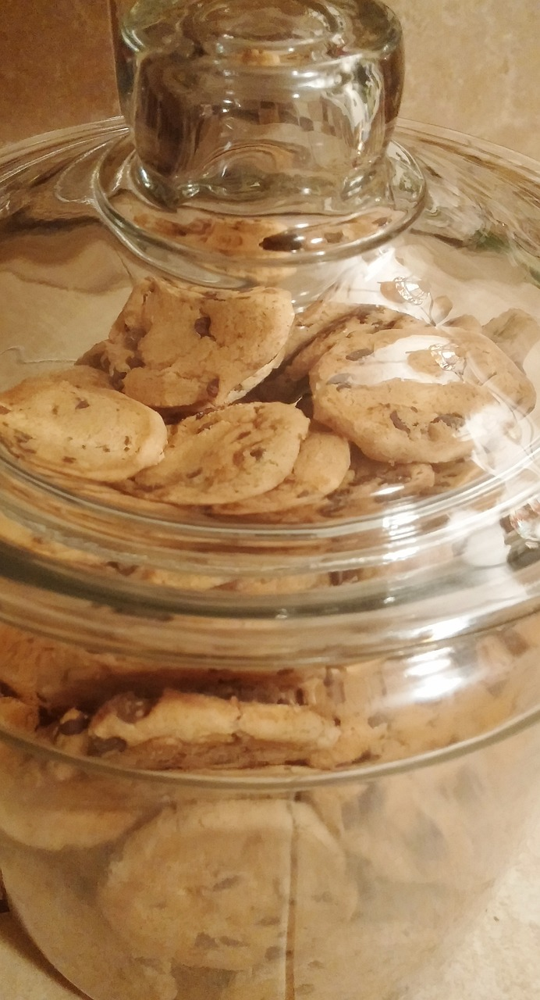

The Infamous Chocolate Chip Cookies
If you are in a rush, or plan to cheap out on any ingredients.... don't bother, it's time to go elsewhere.

Ingredients

Instructions
- Sift together cake flour, bread flour, baking soda, baking powder, and salt into medium bowl and set aside.
- In the bowl of a mixer fully cream the butter and sugars until light and fluffy. Then add in one egg at a time until combined, scraping as you go. Add in vanilla and mix. Gradually add in dry ingredients until just moistened. (do not overmix) Fold in chocolate until evenly dispersed.
- Remove mixing bowl, cover dough tightly with plastic wrap and chill in fridge for 24 hours MINIMUM or as long as 72 hours.
- After dough has rested fully, remove from fridge and allow to come to room temp. Pre-heat oven to 350 deg. Line baking sheets and scoop out dough using a medium dough scooper. Do not press dough down and do not crown the sheet.
- Sprinkle dough balls with celtic salt and then bake for 10-12 minutes for smaller cookies or 18-20 for larger. Watch carefully for browning on edges and do not crowd the oven. Working in small batches and with only one pan in the middle rack at a time will help with even cooking an consistent temps. Use an oven thermometer to monitor temps.
- Allow cookies to cool on pan while second pan is cooking. When next pan is half baked transfer to cooling rack and reset the first pan for another batch.
Note: I suggest allowing cookies to cool completely before storing but obviously you should eat a few warm while you are at it.
